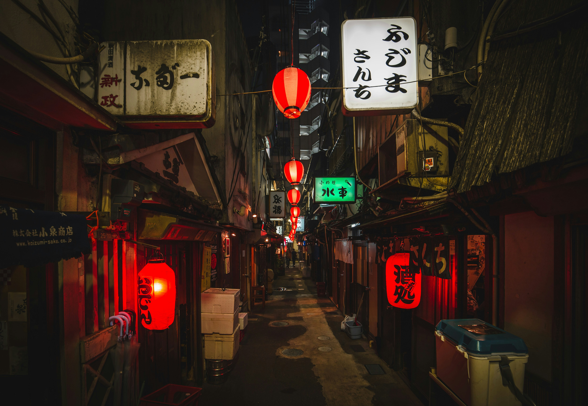

Forget the selfie spots. This tour dives into the Tokyo that locals actually live in — narrow shotengai shopping streets, neighbourhood coffee shops unchanged since the 1970s, family-run tofu shops, and the quiet residential backstreets that give the city its real character. Terry has been walking these streets for 27 years and knows every shortcut, every story.
Traditional covered arcades full of local life
Old-school Japanese coffee shops — a dying art
The real Tokyo, away from tourist maps
Street food and produce the locals love
Walls, alleys, and scenes you won't see on Instagram
Best enjoyed at a slow, curious pace. Bring comfortable shoes.
All tours are private — just you (and your group) with Terry. No strangers, no shared buses, no rushing.
Terry speaks fluent English and Japanese, which opens doors that most tourists never get through.
Check Terry's availability and send a booking request — it only takes a minute.